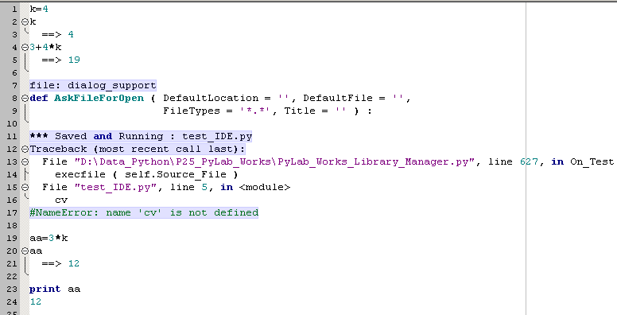
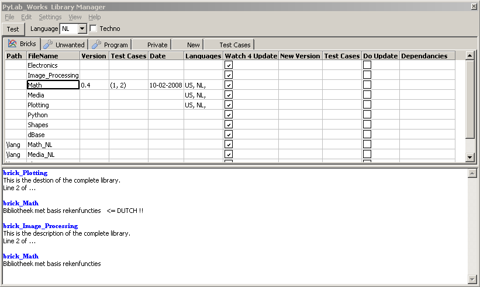
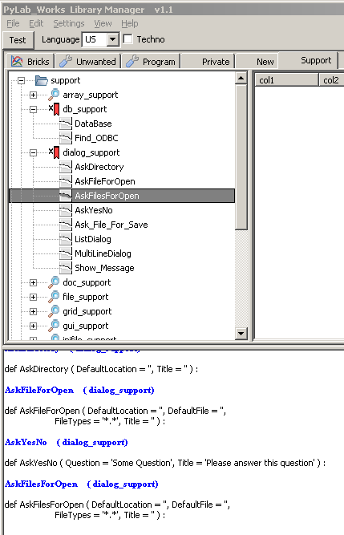

july 2008
Library Manager 

Introduction
With the Library Manager it's easy to compare / update / rollback your local files with the latest files on the web. The library manager scan your PyLab_works directories and the PyLab_Works Website, compares these two and gives you a nice overview of the differences. The you can decide on an individual file base which files should be updated to the latest version.
Below is image of the Bricks tab, which is a good example of all the other groups.
At the top of the page you can select some general settings, like language (see Brick Math, which is in Dutch), at what details you want to view the information (Techno, ..), ...
Then a number of tables, specifying all local and all available libraries. These files are split in number of logical groups:
At the bottom is a general log file (editable), which shows help info, collects all user actions, update information, etc. This information is also stored in a new log file and can be printed.
Through the RM-menu, some extra information is available (e.g. history between current and latest version), which is also included in the log-memo.

Table Columns
Depending on the selected group of files, the available columns may vary.
Path
The relative (to PyLab_Works) path where the library is located.
FileName
The filename of the library. For Bricks the prefix "brick_" is removed.
Clicking on a cell in this column, adds help information to the memo-log. The information might be a user description or an extended Technical article including full history.
Version
The version of the current local file.
Test Cases
Under what conditions the current local file is tested.
Date
The release date of the current local file.
Languages
The available languages for this library. If nothing is specified, there are no translation files and only the original language (should be US) is available.
Watch 4 Update
If this checkbox is checked, PyLab_Works will regular check the website for new versions of that library and the program will warn you automatically.
New Version
The version of the latest release.
Test Cases
Under what conditions the newest version is tested.
Do Update
If checked this file will be updated with the latest version.
Dependencies
Not realized yet.
The general idea is that PyLab_Works generates a dependency list and will warn when updating files while you forget to update files which also need to be updated.
Support Tab

RM-menu
ToDo
Bricks tab
When clicking on a cell in the second column, the description of the library is added to the memo-log. ( In Techno mode, extended description, technical information and full history is added).
If a newer version is available, the differences between the local file and the file on the web is also added to the memo-log.